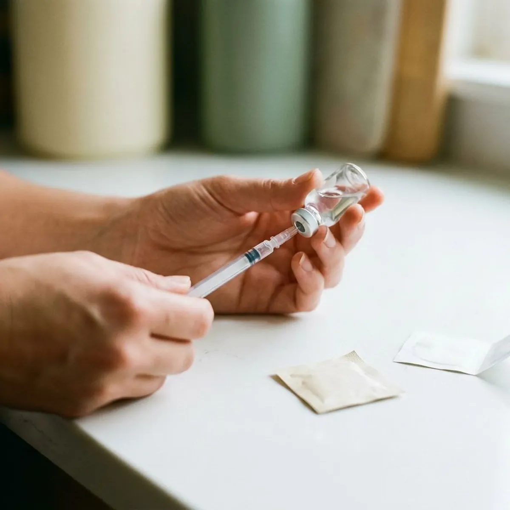

BPC-157 in Syracuse, NY
A four to eight week BPC-157 course, reviewed by a licensed provider and shipped to your door in Syracuse, NY.
- Licensed provider review
- Four to eight week courses
- Shipped from a US pharmacy
- Mid-course check-in included

- Licensed New York Medical Providers
- Personalized Treatment Plans
- Discreet Home Delivery
- Ongoing Medical Support
BPC-157 Peptide Therapy in Syracuse, NY With a Licensed Provider
Syracuse Weight Loss prescribes BPC-157 for patients with a defined recovery goal, such as a tendon strain that has lingered for months. Your provider reviews the injury history and current treatment, including physical therapy, before deciding.
What the program includes:
- Provider review of your injury and current rehab plan
- Daily subcutaneous dosing plan for four to eight weeks
- Mid-course check-in to decide whether to continue

Start your BPC-157 review online in Syracuse, NY.
Take the short online questionnaire so a licensed provider can decide whether BPC-157 makes sense.
Related Peptide Therapy Options in Syracuse, NY
Peptide protocols for recovery, longevity, sleep and focus, prescribed when appropriate and compounded by licensed US pharmacies.


helped
Why patients choose us for BPC-157 in Syracuse, NY
BPC-157 is a chain of 15 amino acids modeled on a fragment of a protein in human gastric juice. Rodent studies show faster tendon and ligament healing, likely through new blood vessel formation.
- Defined Goal, BPC-157 is prescribed for a specific injury or gut goal, not as a general wellness shot.
- Time-Limited Course, Courses usually last four to eight weeks with a break afterward.
- Plain Evidence, Your provider explains that most of the research is in animals.
Anywhere in Syracuse
Skip the drive across Syracuse for a peptide consult. Everything from intake to check-ins runs through a secure online portal, and vials arrive by mail in insulated packaging.
Licensed care team
Every Oakwell MD provider reads your full questionnaire before suggesting a dose or course length. A history of cancer usually rules BPC-157 out, and they explain why.
Safety first
Screening covers cancer history and pregnancy, because its effect on blood vessel growth raises a theoretical tumor concern. Your BPC-157 is compounded by a licensed US pharmacy, never sold as a research chemical.
The care standards behind every Syracuse plan
Syracuse Weight Loss runs on the Oakwell MD clinical model: board-certified providers, US pharmacies that meet state and federal compounding rules, and follow-up that does not stop when the package arrives. Every treatment on this site goes through the same screening throughout Syracuse, NY.
How BPC-157 Therapy Works in Syracuse, NY
What BPC-157 Is and How It Works in Syracuse
BPC stands for Body Protection Compound. It is a synthetic peptide of 15 amino acids based on a protein in stomach fluid, and in rodent studies it appears to increase new blood vessel growth and growth factor activity around injured tissue. That is the proposed reason it gets attention for tendons and the gut lining. The human research is thin, and no FDA approval exists.

Who BPC-157 Is For
Most requests involve a tendon. Typical patients are active adults with tennis elbow, Achilles or patellar tendon pain that has lasted longer than six weeks despite rest, or people with gut symptoms already worked up by a doctor. It fits best when rehab is already happening and progress has stalled. Tested athletes should know WADA has prohibited BPC-157 since 2022.
Dosing and Schedule in Syracuse
Daily injections are the usual pattern. Providers commonly prescribe 250 to 500 mcg as a small subcutaneous injection once or twice a day for four to eight weeks, followed by a break of at least a few weeks before any second course. For gut-focused goals, an oral form may be used, although how well it absorbs is unclear. After mixing with bacteriostatic water, the vial goes in the fridge.
What to Expect Week by Week
Weeks one and two are quiet. Most patients spend the first 10 to 14 days getting comfortable with the injection routine and notice little change, and any easing of pain or stiffness usually shows up between weeks two and five if it shows up at all. Progress should be judged next to your rehab, not in isolation. No change by week six usually means the course stops.
Side Effects and Risks in Syracuse
Reported side effects are usually mild. Patients describe injection-site redness or itching and mild nausea, and a few report headaches or noticeable fatigue during the first week of a course. Its possible effect on new blood vessels raises a theoretical worry about feeding existing tumors. Long-term human safety has not been established.
Eligibility and Screening
Cancer history is the first question. BPC-157 is not prescribed for people with active cancer or a recent cancer history, during pregnancy or breastfeeding, or for anyone whose injury is new and severe enough to need an in-person exam. Patients with significant heart or liver disease get extra review. Recent surgery and blood thinners also come up in screening.
How BPC-157 Compares to TB-500 and Blends in Syracuse
Location is the main difference. BPC-157 is usually discussed for local repair, such as one tendon or the gut lining, while TB-500, a thymosin beta-4 fragment, is studied for broader tissue repair and is typically injected once or twice weekly. Blends exist, including BPC-157 with TB-500 and the four-peptide KLOW mix, but extra benefit is unproven. Starting alone makes it clear whether BPC-157 did anything.

How the Online Process Works
Describe the injury in plain words. The questionnaire asks when it started, what makes it worse, what treatment you have already had, and whether you have imaging or a diagnosis from an orthopedic or sports medicine doctor. Your answers go to a licensed provider, who may message you with a question or two. If prescribed, BPC-157 ships from a licensed US pharmacy with mixing supplies.
BPC-157 Near Me in Syracuse, NY
Finding a provider who will even discuss BPC-157 can mean driving across Syracuse to a cash-only wellness office on a weekday afternoon. Online review takes about ten minutes from home. No waiting room needed.
Your provider needs the injury story, start to now. Imaging reports and therapy notes help a lot, because they tell your provider how long the injury has been stuck and what has been tried. List every medication.
Vials ship from a licensed US pharmacy to your door anywhere in Syracuse and nearby towns, packed cold when needed and sent with bacteriostatic water and syringes. Most courses need one or two shipments. Boxes are unmarked.
Is BPC-157 right for you?
Five quick questions, then a licensed provider reviews your answers. No commitment.
Syracuse Weight Loss at a glance
- Online care for Syracuse, NY and nearby
- Online visits, no office wait
- Medication shipped from licensed US pharmacies
- 4.9-star rated by 675+ Syracuse-area patients
Syracuse patients
- Population
- 145,560
- Visits
- Online, from anywhere in Syracuse
- Delivery
- Syracuse and communities nearby
- Nearby
- Auburn
Patients in Syracuse, NY choose an online clinic for BPC-157 because a provider who discusses the evidence honestly is hard to find locally.
Syracuse map
Everything we treat in Syracuse, NY
Weight loss is where most patients start. The same provider-reviewed, shipped-to-you model covers peptides, sexual health, hair, sleep and longevity.


How to Get Started With BPC-157 in Syracuse, NY
The questionnaire takes about ten minutes, and a provider reviews it before anything is prescribed.
Answer a Few Questions
The short online questionnaire asks about your injury or gut symptoms and your health history. You can attach imaging reports if you have them.
Provider Reviews Your Case
A licensed provider decides whether BPC-157 is reasonable or whether in-person care should come first. They may message you with follow-up questions.
Course and Check-Ins
If prescribed, BPC-157 ships from a licensed US pharmacy with mixing supplies. A mid-course check-in decides whether you finish the course.
Frequently Asked Questions About BPC-157 in Syracuse
It may be reasonable for a tendon or ligament problem that physical therapy alone has not fixed. Active cancer or pregnancy rules it out, and tested athletes should avoid it.
A provider explains why, which may be an injury that needs an in-person exam first. You may still get guidance on in-person care or a different treatment.
Redness or itching where you inject is most common, along with occasional mild nausea or headache. There is no long-term human safety data, which is why cancer history matters so much.
Combining them is possible as the BPC-157 + TB-500 blend, but there is no strong evidence the pair works better than one peptide. Your provider usually starts with BPC-157 alone.
Oral forms are sometimes used for gut goals, but how much reaches the bloodstream is unclear. Injections are the more common choice for tendon and ligament problems.
Insurance does not usually cover compounded peptides because these products have no FDA approval. Some patients use HSA or FSA funds where their plan allows it.
BPC-157 has no FDA approval for any medical use, and it is prepared by a compounding pharmacy. In 2023 the FDA also listed it among compounding substances with possible safety concerns.
WADA has prohibited BPC-157 for athletes in tested sports. Anyone in drug-tested sport should say so in the questionnaire.
What patients say about Syracuse Weight Loss
Marcus T.
What sold me was that they did not just mail a kit. My provider adjusted my dose twice based on how I was feeling and actually answered my messages. Down more than I expected and my blood pressure is finally normal.
Tirzepatide Injections · Auburn, NYPriya S.
I will never do needles, so the dissolving tablet was the only reason I tried this. Easy morning routine, discreet packaging, and the care team explained every step before I paid anything.
Semaglutide Pills · Auburn, NYAngela W.
One tablet a day instead of three products. Six months in the thinning at my part has filled in noticeably and the check-ins kept me consistent.
Hair Growth · Syracuse, NYLaura S.
Honest from the start. The provider told me which option fit my history and why, and when I hit a plateau they changed the plan instead of just raising the dose. Felt like real medicine, not a subscription.
GLP-1 Weight Loss · Syracuse, NYDaniel K.
Came for recovery after a shoulder injury, stayed for how thorough the screening was. They asked for labs, explained what BPC-157 can and cannot do, and never oversold it.
Peptide Therapy · Syracuse, NYJordan M.
No awkward waiting room, no pharmacy counter. The chewable they recommended works and the package looked like anything else on the porch.
ED Treatment · Syracuse, NYReviews reflect individual experiences. Results vary and treatment is prescribed only when clinically appropriate.
Important safety information. GLP-1 medications (semaglutide, tirzepatide) are not for everyone. Do not use them if you or a family member have had medullary thyroid carcinoma or Multiple Endocrine Neoplasia syndrome type 2, if you are pregnant or breastfeeding, or if you have a history of pancreatitis without discussing it with your provider. Common side effects include nausea, constipation, diarrhea and reduced appetite. Compounded medications are prepared by licensed pharmacies and are not FDA-approved. A licensed provider decides whether any treatment is appropriate for you.